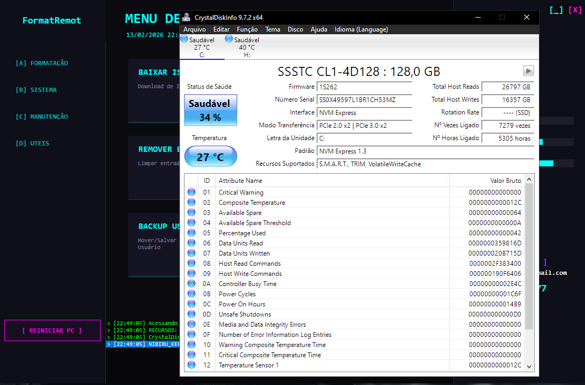
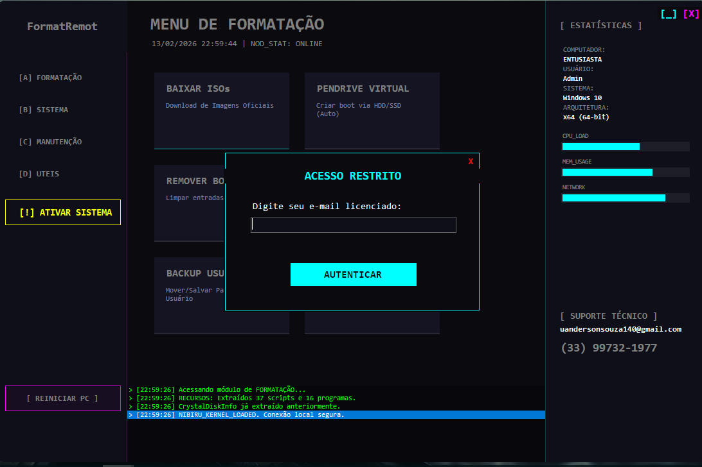
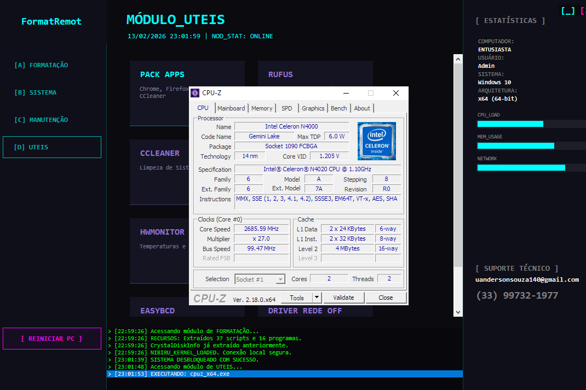
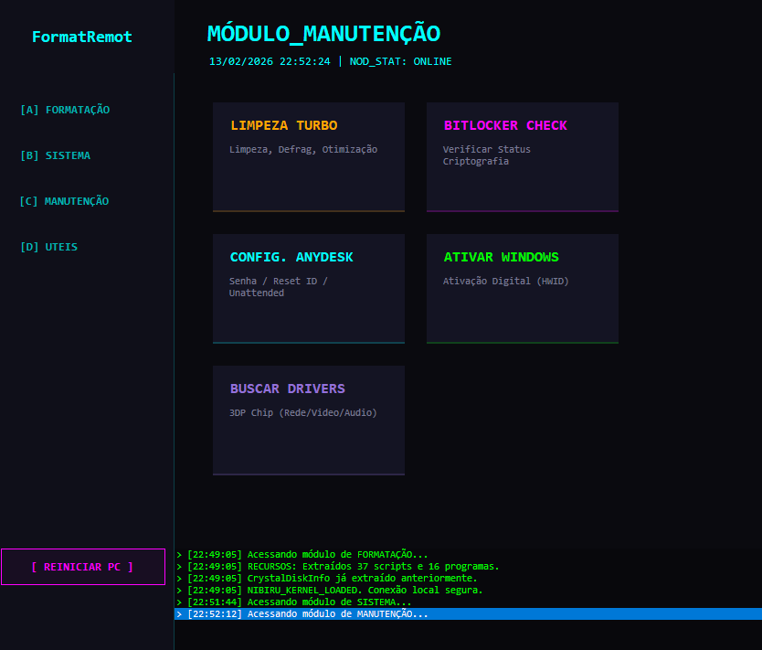

Veja o FormatRemot em ação
Confira todas as funcionalidades e uma formatação real sendo feita na prática.

Funcionalidades do Sistema

Formatação Real na Prática

Interface Intuitiva

Automação de Scripts

Configuração Rápida

Suporte Remoto